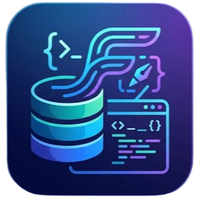

Afficher
afficher tous les 'users' afficher tous les 'users' si $age > 25

FakeSQLÉcrivez, validez et exécutez vos requêtes en français dans un mini-IDE léger. Vos tables restent de simples fichiers .txt : lisibles, portables, versionnables.
Gratuit · Ultra-léger · Fonctionne 100 % hors ligne
# Créer une table creer fichier 'users' ( $id : entier , $name : chaine , $age : entier ) inserer dans 'users' : $name = 'Ada' , $age = 36 inserer dans 'users' : $name = 'Alan' , $age = 41 afficher tous les 'users' si $age > 25
2 lignes trouvées
| id | name | age |
|---|---|---|
| 1 | Ada | 36 |
| 2 | Alan | 41 |
Les mots-clés sont des verbes français : afficher, inserer, modifier, effacer. Pas de jargon anglais à mémoriser avant de comprendre l’idée.
Une installation de quelques méga-octets. Pas de serveur, pas de configuration : vous écrivez une requête, vous voyez le résultat.
Des types simples (entier, reel, booleen, caractere, chaine) et des règles claires. Parfait en classe, en TP ou pour débuter seul.
Six commandes suffisent pour créer une table, la remplir et la faire vivre. Les mots-clés ne sont pas sensibles à la casse.
afficher tous les 'users' afficher tous les 'users' si $age > 25
inserer dans 'users' : $name = 'Ada' , $password = '1234'
modifier 'users' si $id = 1 : $name = 'Alan'
effacer de 'users' si $age >= 60
creer fichier 'users' ( $id : entier , $prix : reel , $actif : booleen )
supprimer fichier 'users' renommer fichier 'users' en 'clients'
Ctrl + OOuvrir un dossierCtrl + NNouvelle requêteCtrl + EntréeExécuterCtrl + WFermer l’onglet
Opérateurs : = <> != < <= > >=, combinables avec et / ou. Commentaires avec # ou //. Plusieurs requêtes : séparez-les par ; ou un retour à la ligne.
Version 0.1.0 · Gratuit. Choisissez votre système.
Votre navigateur ou votre système peut afficher un avertissement au premier lancement tant que l’application n’est pas signée. Pour compiler depuis les sources, consultez le README du projet.
Non. C’est un langage plus simple, pensé pour découvrir les notions de tables, de lignes et de conditions en français. Une fois ces idées acquises, passer à SQL devient naturel.
Dans le dossier workspace que vous ouvrez, sous forme de simples fichiers .txt : un fichier manager.txt et un fichier par table. Rien n’est envoyé sur Internet.
Pour l’instant, le compilateur est intégré à l’éditeur. Une version en ligne de commande est prévue.
Le choix des colonnes à afficher, le tri, le comptage et les jointures sont à l’étude. Dites-nous ce dont vous avez besoin.
Oui, librement. Il s’installe en quelques secondes et fonctionne hors ligne, même sur des postes limités.